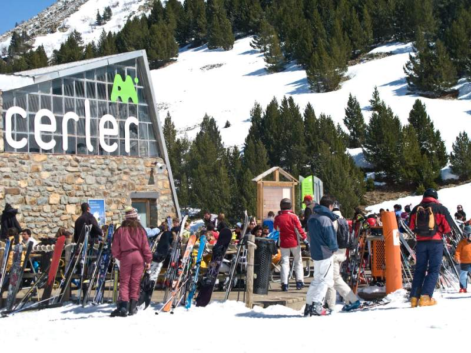
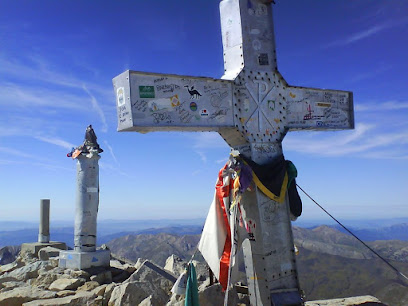

Cerler
La estación de esquí de Cerler, situada en el corazón del Valle de Benasque en los Pirineos aragoneses, es conocida por su belleza natural y sus espectaculares vistas al pico Aneto, el más alto de los Pirineos. Con una altitud máxima de 2.630 metros, Cerler ofrece más de 80 kilómetros de pistas de todos los niveles, siendo ideal tanto para principiantes como para esquiadores avanzados.
el aneto
El Aneto, con 3.404 metros de altura, es la montaña más alta de los Pirineos y uno de los picos más emblemáticos de España. Ubicado en el Parque Natural Posets-Maladeta, en Huesca, Aragón, el Aneto destaca por su imponente glaciar, el mayor de los Pirineos, aunque este ha sufrido un notable retroceso en las últimas décadas. Su ascenso es un reto popular entre montañistas y ofrece vistas espectaculares del entorno pirenaico. La travesía incluye el famoso paso conocido como “el Puente de Mahoma,” un estrecho y expuesto tramo de cresta, lo que añade un elemento de dificultad y emoción a la experiencia de alcanzar su cumbre.